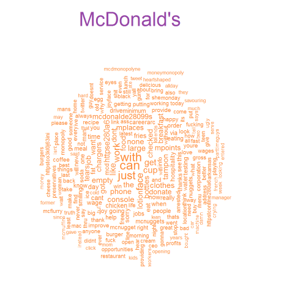

The Daily Grind
Kavita Deodhar and Sumit Gupta
Project maintained by kavitadeodhar Hosted on GitHub Pages — Theme by mattgraham
Screencast
Overview
Social Media is a daily diary for many people. It is now easy to let your voice be heard even if it is about a simple thing like our regular cup of coffee. There are many options and people tend to be loyal to their brands. The intent of this endeavor is to analyze and quantify the sentiment of people based on their tweets. We would like to show how this data could provide highly useful insights about the business. By harnessing the power of data, companies can provide better service to the customers and improving marketing strategy. It could also be used to see how a company could expand their presence. In this particular endeavor, we will try to see if a region favors one brand over the other. Also the intent is to explore whether momentary emotion conveyed via a tweet has any correlation on customer satisfaction index. For this we will compare CSAT data from ACSI(American customer satisfaction index) to the sentiment scores generated using our code.
Objectives
Through this project we would like to learn and accomplish following objectives:
- Perform sentiment analysis on twitter data for various quick service restaurant brands and determine which brand has a more positive presence on social media compared to the other brands.This could be associated with the popularity of the brand.
- Use sentiment scores to determine if brand preference changes in different parts of the country.
- Perform regression analysis and determine if emotion expressed on twitter ties into/affects/compares to customer satisfaction index which is calculated using multivariate customer experience data.
- See if there is a trend (plot against time).This could be used by the business to tie sentiment to certain promotions led by the brand or events(positive or negative) related to the brand.
Approach
We began our study by collecting data from following sources:
- Tweets with hash tags of various quick service restaurants were collected using the twitterR package.
- ACSI data from ACSI website for following Quick Serve Restaurants like Dunkin, Starbucks, McDonalds, Panera and Subway.
- Emoticons conversion file.
Data Scraping
We then performed the data scraping tasks on twitter data as well as ACSI data. The tweets collected had emoticons. To get the right sentiment from these emojis we had to convert these emojis to correct text. The data was cleansed so that each tweet could impart the correct sentiment. Once the data was cleansed we performed a series of exploratory data analysis to understand the general sentiment of a quick service restaurant. This analysis revealed a lot of facts about how a company is perceived by a customer. The ACSI data for the brands we chose for this analysis was from the ACSI website.We read the specific table that contained this data for multiple years for these 5 brands.
Sentiment Analysis
Plotting data on US map
As the first part of our analysis,we are going to map all the tweets based on geo code on the US map. This is an attempt to see if a brand is popular in a specific region.
 From the map above,we can see the distribution of tweets across the country. We see that the number of tweets for Panera look higher. The total number of tweets for every brand after data scraping was the same. This simply means that the latitude longitude information was available for larger number of tweets for Panera than the other brands.
From the map above,we can see the distribution of tweets across the country. We see that the number of tweets for Panera look higher. The total number of tweets for every brand after data scraping was the same. This simply means that the latitude longitude information was available for larger number of tweets for Panera than the other brands.
Calculating tweet scores for all brands.
We have used the nrc sentiment categories.The get_nrc_sentiment implements Saif Mohammad’s NRC Emotion lexicon. According to Mohammad, “the NRC emotion lexicon is a list of words and their associations with eight emotions (anger, fear, anticipation, trust, surprise, sadness, joy, and disgust) and two sentiments (negative and positive)” (See http://www.purl.org/net/NRCemotionlexicon). The get_nrc_sentiment function returns a data frame in which each row represents a sentence from the original file. Source of the above information is “https://cran.r-project.org/web/packages/syuzhet/vignettes/syuzhet-vignette.html”
Sentiment per brand
Below is the plot of number of tweets per brand per category.It helps us understand the general emotion for each brand and also per category for every brand. We see that the trust sentiment is high for all the brands in general except Subway
The categories of sentiments are fine, but what are those words that people associate with these brands? What is it that people are talking about in regards to the brands?Word cloud helps us do just that. Below are the word clouds for all the 5 of our brands. Note that the font is largest for the most popular word and decreases as the frequency decreases. The most used words may change through out the course of the day as more tweets are added from the new day and old ones removed.





Sentiment Over Time
We have been able to gather tweets only for a certain number of days due to restrictions on the Twitter API. So we cannot see the trend of sentiment over years or months. However we calculated and plotted negative and positive sentiment over the last few days for all the brands. From the figures below we see that Panera has high positive sentiment while Subway has a high negative sentiment.


Comparing the distribution of scores.
We then checked the distribution of scores or sentiments. The difference between the positive and negative scores will give the general tweet sentiment or score. Negative value will indicate negative sentiment and positive value will contain positive sentiment.


The customer satisfaction (ACSI) index score is calculated as a weighted average of three survey questions that measure different facets of satisfaction with a product or service. ACSI researchers use proprietary software technology to estimate the weighting for each question.Source of this information is “http://www.theacsi.org” We then compared the average tweet score(calculated for tweets in our dataset which are over a period of few days only) for all our brands with the ACSI index score which is determined as described above. As can be seen from the table with average tweet scores calculated by us and ACSI index determined through surveys and research are close. There is a good possibility that the tweet scores could be used to predict the satisfaction index.

Conclusion
Based on the visualizations above, we can see that there is a strong preference for Panera over the rest of the brands.As was the objective, region specific preference cannot be concluded due to the lack of twitter data with the latitude and longitude information. From the chart "Total Sentiment Score for all tweets", we can see the sentiment expressed by people for various brands. E.g. Trust is the highest for Dunkin.The word cloud shows the most used words for a brand.E.g. Starbucks has hiring veterans program which is seen to be very popular.We were also able to plot sentiment (positive and negative) per brand over a period of a few days. Due to limitation of the twitter API, which limits the tweets that can be used, only to a few days old, we were not able to trend over months of data. But the trend over days presents the change in sentiment per day quite well. Again, it is seen that Panera has the least negative or most positive sentiment over the twitter dataset we have analysed.We were able to decode emojis which we thought was important in sentiment analysis due to it's extensive use in social media these days. Lastly, we also to compare the satisfaction of customers based on positive twitter scores to the ASCI index score which is caluculated by means of extensive surveying. Although we were not able to compare these numbers over years, but just the averages, they were pretty close. So we think that the twitter scores could be used to predict the satifaction index especially if a larger dataset(more tweets thus resulting in a large number of scores) could be obtained.
The Daily Grind For CSCIE-107 maintained by kavitadeodhar/sumitgupta Published with GitHub Pages